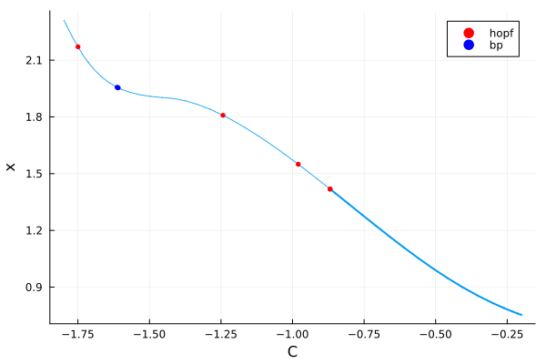
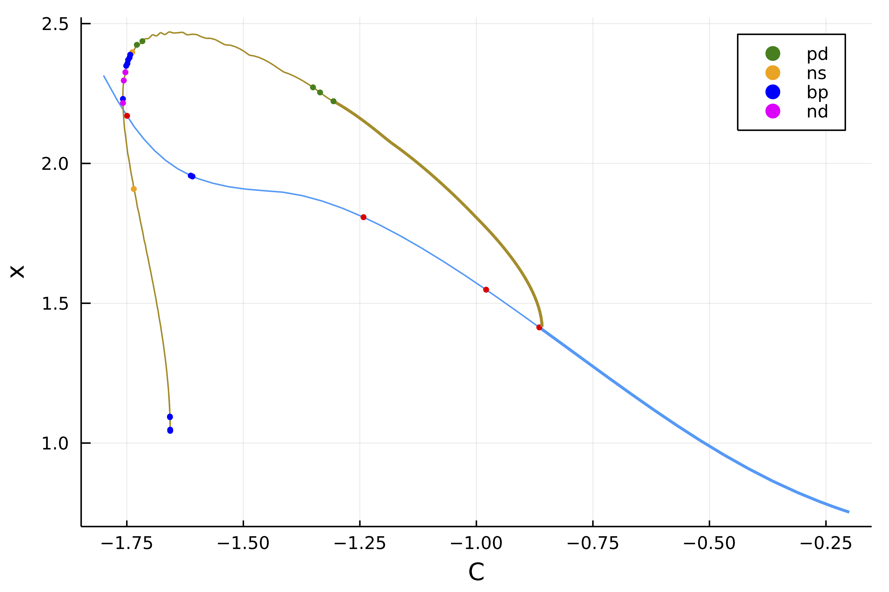
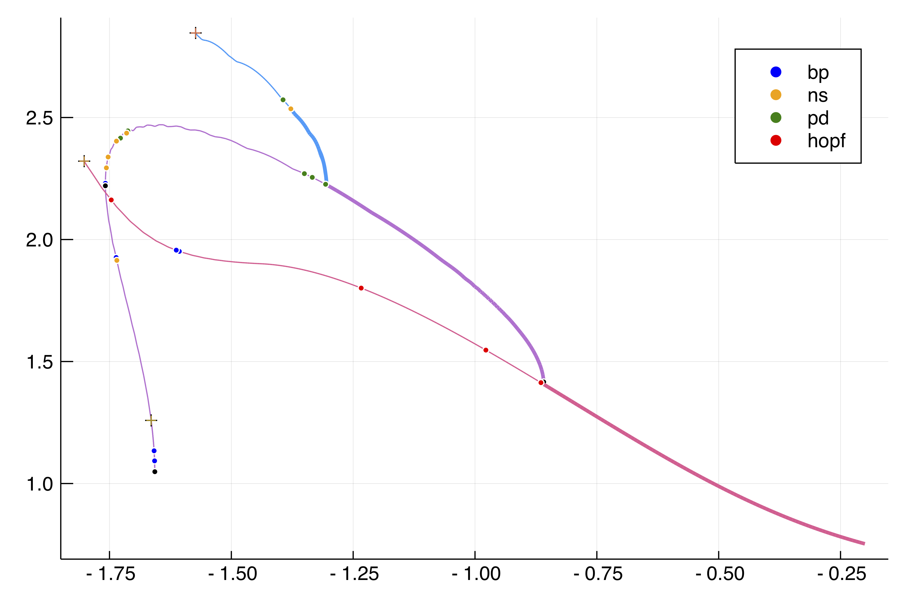

🟡 Period doubling in the Barrio-Varea-Aragon-Maini model
The purpose of this example is to show how to handle period doubling bifurcations of periodic orbits.
We focus on the Shooting method but we could have based the computation of periodic orbits on finite differences instead. Performances of the current tutorial are directly linked to the ones of OrdinaryDiffEq.jl.
We focus on the following 1D model (see [Aragon]):
\[\tag{E}\begin{aligned} &\frac{\partial u}{\partial t}=D \nabla^{2} u+\eta\left(u+a v-C u v-u v^{2}\right)\\ &\frac{\partial v}{\partial t}=\nabla^{2} v+\eta\left(b v+H u+C u v+u v^{2}\right) \end{aligned}\]
with Neumann boundary conditions. We start by encoding the model
using Revise, ForwardDiff, SparseArraysusing BifurcationKit, LinearAlgebra, Plotsconst BK = BifurcationKitf(u, v, p) = p.η * ( u + p.a * v - p.C * u * v - u * v^2)g(u, v, p) = p.η * (p.H * u + p.b * v + p.C * u * v + u * v^2)function NL!(dest, u, p, t = 0.) N = div(length(u), 2) u1 = @view (u[1:N]) u2 = @view (u[N+1:end]) dest[1:N] .= f.(u1, u2, Ref(p)) dest[N+1:end] .= g.(u1, u2, Ref(p)) return destendfunction Fbr!(f, u, p) NL!(f, u, p) mul!(f, p.Δ, u,1,1) fendNL(u, p) = NL!(similar(u), u, p)Fbr(x, p, t = 0.) = Fbr!(similar(x), x, p)# this is not very efficient but simple enough ;)Jbr(x,p) = sparse(ForwardDiff.jacobian(x -> Fbr(x, p), x))Jbr (generic function with 1 method)We can now perform bifurcation of the following Turing solution:
N = 100n = 2Nlx = 3pi/2h = 2lx/NX = LinRange(-lx,lx, N)Δ = spdiagm(0 => -2ones(N), 1 => ones(N-1), -1 => ones(N-1) ) / h^2; Δ[1,1]=Δ[end,end]=-1/h^2D = 0.08par_br = (η = 1.0, a = -1., b = -3/2., H = 3.0, D = D, C = -0.6, Δ = blockdiag(D*Δ, Δ))u0 = 1.0 * cos.(2X)solc0 = vcat(u0, u0)probBif = BK.BifurcationProblem(Fbr!, solc0, par_br, (@optic _.C) ;J = Jbr, record_from_solution = (x, p; k...) -> norminf(x), plot_solution = (x, p; kwargs...) -> plot!(x[1:end÷2]; label="",ylabel ="u", kwargs...))# parameters for continuationeigls = EigArpack(0.5, :LM)opt_newton = NewtonPar(eigsolver = eigls, tol = 1e-9)opts_br = ContinuationPar(dsmax = 0.04, ds = -0.01, p_min = -1.8, nev = 21, plot_every_step = 50, newton_options = opt_newton, max_steps = 400)br = continuation(re_make(probBif, params = (@set par_br.C = -0.2)), PALC(), opts_br; plot = true)plot(br)
Periodic orbits from the Hopf point (Standard Shooting)
We continue the periodic orbit form the first Hopf point around $C\approx -0.8598$ using a Standard Simple Shooting method (see Periodic orbits based on the shooting method). To this end, we define a SplitODEProblem from DifferentialEquations.jl which is convenient for solving semilinear problems of the form
\[\dot x = Ax+g(x)\]
where $A$ is the infinitesimal generator of a $C_0$-semigroup. We use the exponential-RK scheme ETDRK2 ODE solver to compute the solution of (E) just after the Hopf point.
import OrdinaryDiffEq as ODE# parameters close to the Hopf bifurcationpar_br_hopf = @set par_br.C = -0.86# parameters for the ODEProblemf1 = ODE.MatrixOperator(par_br.Δ)f2 = NL!prob_sp = ODE.SplitODEProblem(f1, f2, solc0, (0.0, 280.0), @set par_br.C = -0.86)sol = @time ODE.solve(prob_sp, ETDRK2(krylov=true); abstol=1e-14, reltol=1e-14, dt = 0.1)We use aBS from the first Hopf point:
# define the functional for the standard simple shooting based on the# ODE solver ETDRK2.probSh = Shooting(prob_sp, ODE.ETDRK2(krylov=true), [sol(280.0)]; abstol=1e-14, reltol=1e-12, dt = 0.1, lens = (@optic _.C), jacobian = BK.FiniteDifferencesMF())# parameters for the Newton-Krylov solverls = GMRESIterativeSolvers(reltol = 1e-7, maxiter = 50, verbose = false)optn = NewtonPar(verbose = true, tol = 1e-9, max_iterations = 12, linsolver = ls)eig = DefaultEig()opts_po_cont = ContinuationPar(dsmin = 0.0001, dsmax = 0.01, ds= 0.005, p_min = -1.8, max_steps = 70, newton_options = (@set optn.eigsolver = eig), nev = 10, tol_stability = 1e-2)br_po_sh = @time continuation(br, 1, opts_po_cont, probSh; verbosity = 3, plot = true, linear_algo = MatrixFreeBLS(@set ls.N = probSh.M*n+2), plot_solution = (x, p; k...) -> BK.plot_periodic_shooting!(x[1:end-1], 1; k...), record_from_solution = (x,p;k...) -> begin sol = get_periodic_orbit(probSh, x, p.p) mn, mx = extrema([norminf(sol[:,i]) for i in axes(sol[:,:],2)]) return (max = mx, min = mn, period = x[end]) end, normC = norminf)We plot the result using plot(br_po_sh, br, label = ""):

The Floquet multipliers are not very precisely computed here using the Shooting method. We know that 1=exp(0) should be a Floquet multiplier but this is only true here at precision ~1e-3. In order to prevent spurious bifurcation detection, there is a threshold tol_stability in ContinuationPar for declaring an unstable eigenvalue. Another way would be to use Poincaré Shooting so that this issue does not show up.
Periodic orbits from the PD point (Standard Shooting)
We now compute the periodic orbits branching of the first Period-Doubling (PD) bifurcation point. We use aBS from PD point:
opts_po_cont = ContinuationPar(dsmin = 0.0001, dsmax = 0.005, ds= 0.001, p_min = -1.8, max_steps = 100, newton_options = (@set optn.eigsolver = eig), nev = 5, tol_stability = 1e-3)br_po_sh_pd = @time continuation(deepcopy(br_po_sh), 1, opts_po_cont; verbosity = 2, plot = true, linear_algo = MatrixFreeBLS(@set ls.N = probSh.M*n+2), plot_solution = (x, p; kwargs...) -> (BK.plot_periodic_shooting!(x[1:end-1], 1; kwargs...); plot!(br_po_sh; subplot=1, legend=false)), record_from_solution = (x,p;k...) -> begin sol = get_periodic_orbit(p.prob, x, p.p) mn, mx = extrema([norminf(sol[:,i]) for i in axes(sol[:,:],2)]) return (max = mx, min = mn, period = x[end]) end, normC = norminf)and plot it using plot(br_po_sh, br, br_po_sh_pd, label = ""):

References
- Aragon
Aragón, J. L., R. A. Barrio, T. E. Woolley, R. E. Baker, and P. K. Maini. “Nonlinear Effects on Turing Patterns: Time Oscillations and Chaos.” Physical Review E 86, no. 2 (2012)